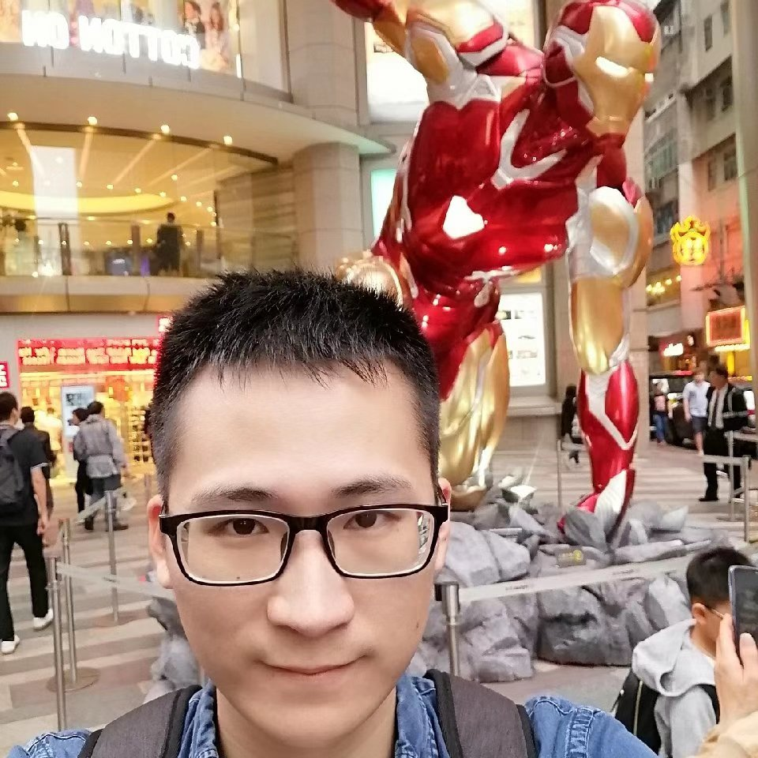

Wang ChenPh.D. Student
Room 1024, Ho Sin-Hang Engineering Building, |
 |


Biography
I am a fifth-year Ph.D. student at Department of Computer Science and Engineering in The Chinese University of Hong Kong, supervised by Prof. Irwin King. My research interest includes keyphrase generation, text summarization, natural language processing.
News
- [04/2020] One paper accepted by SIGIR 2020.
- [04/2020] One paper accepted by ACL 2020.
- [11/2019] I joined Tencent AI Lab as a research intern.
Publications [Google Scholar]
-
A Unified Dual-view Model for Review Summarization and Sentiment Classification with Inconsistency Loss
Hou Pong Chan*, Wang Chen*, and Irwin King. * indicates equal contributions
Proceedings of the 43th Conference of the Annual International ACM SIGIR Conference on Research and Development in Information Retrieval (SIGIR), 2020.[code]
-
Exclusive Hierarchical Decoding for Deep Keyphrase Generation
Wang Chen, Hou Pong Chan, Piji Li, and Irwin King.
Proceedings of the 58th Conference of the Association for Computational Linguistics (ACL), 2020.[code]
-
Neural Keyphrase Generation via Reinforcement Learning with Adaptive Rewards
Hou Pong Chan, Wang Chen, Lu Wang, and Irwin King.
Proceedings of the 57th Conference of the Association for Computational Linguistics (ACL), 2019.[code]
-
An Integrated Approach for Keyphrase Generation via Exploring the Power of Retrieval and Extraction
Wang Chen, Hou Pong Chan, Piji Li, Lidong Bing, and Irwin King.
Proceedings of the 2019 Conference of the North American Chapter of the Association for Computational Linguistics (NAACL), 2019.[code]
-
Title-Guided Encoding for Keyphrase Generation
Wang Chen, Yifan Gao, Jiani Zhang, Irwin King, and Michael R. Lyu Proceedings of the Thirty-Third AAAI Conference on Artificial Intelligence (AAAI), 2019. -
Difficulty Controllable Generation of Reading Comprehension Questions
Yifan Gao, Lidong Bing, Wang Chen, Michael R. Lyu and Irwin King Proceedings of the 28th International Joint Conference on Artificial Intelligence (IJCAI), 2019.
Honors & Awards
| Outstanding Reviewer, EMNLP, 2020 |
| SIGIR Student Travel Grant of SIGIR 2020 |
| NAACL Student Travel Grant of NAACL 2019 |
| AAAI Student Travel Grant of AAAI 2019 |
| CUHK Postgraduate Studentship 2016-2020 |
| National Scholarship (Top 5\% in the grade), 2015 |
| Institute of Electronics, Chinese Academy of Sciences Scholarship (Top 5\%), 2014 |
| Outstanding Student Scholarship—Grade 2 (Top 20\%), 2013 |
Professional Activities
Teaching Assistant
| 2016/2017/2019 | Fall | ENGG1110 Problem Solving By Programming |
| 2017/2018/2019/2020 | Spring | CSCI2100 Data Structures |
Working Experiences
Advisor: Dr. Piji Li
Advisor: Dr. Ding Jiang